Сборки от Аддерли
MakuOS 11 24H2 V3 (Windows 11 24H2, 26100.2161)
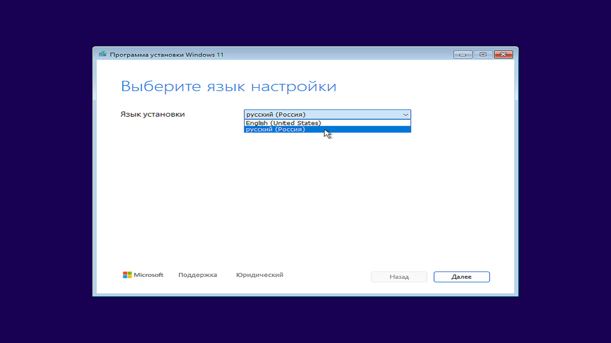
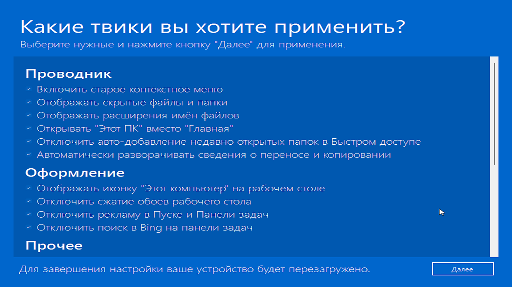
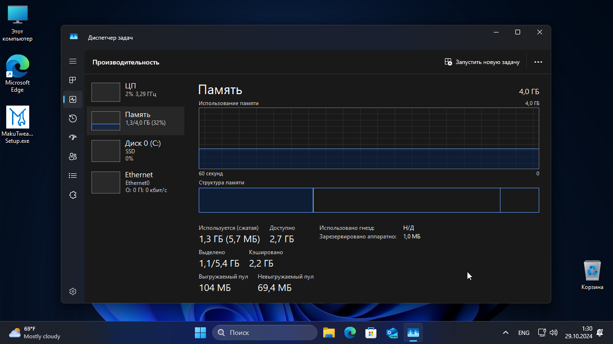
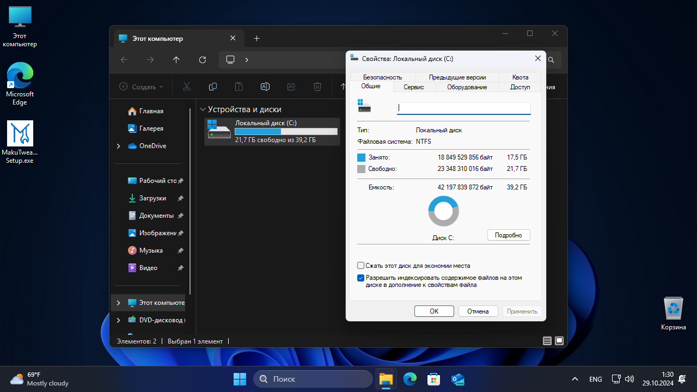
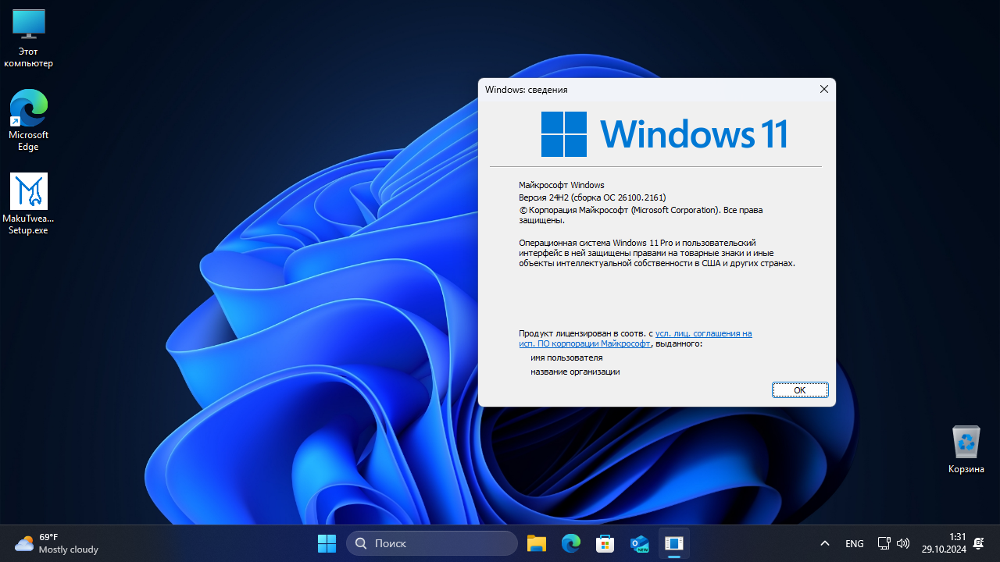

Удалённые приложения:
Удалён Windows Defender,Clipchamp, Microsoft Новости, Погода, Диктофон, Quick Assist,
Microsoft Solitaire Collection, Sticky Notes, Microsoft Family,
DevHome, Feedback Hub, Your Phone, Windows Mail, OneDrive, Windows Mixed Reality, Skype.
Применённые настройки:
Основное:
Удалён рекламный диалог "Давайте завершим настройку этого устройства"Отключён Content Delivery Manager, который отвечает за предустановку рекламы
Запрещена установка стандартных мусорных UWP приложений после обновления системы
Из панели задач убраны рекламные иконки
На панели задач добавлена кнопка "Завершить задачу" в ПКМ по программе
Отключён SmartScreen и Включён DirectPlay
Добавлены платные кодеки HEVC и HEIF
Отключён HPET таймер
Интегрированны NET Framework 2.0, 3.0, 3.5.
Телеметрия:
Запрещена диагностика установленных приложенийЗапрещена телеметрия за активацией системы
Запрещена публикация активности пользователя
Запрещён сбор информации о пользователе
Запрещён сбор информации об устройстве пользователя
Запрещён автоматической вход в аккаунт OneDrive
Запрещён сбор информации о производительности системы
Запрещено эксперементирование над системой пользователя
Отключена отправка сведений о сбоях приложений при их зависании
Отключена отправка результатов поиска пользователя
Отключена активация управления голосом
Отключена тихая установка рекламных приложений
Отключён сбор информации о голосе пользователя при использовании функций ввода голосом
Прочие изменения:
Интегрированны все обновления по конец октября 2024 года.В сборке присутствует два языка: Английский и Русский.
Убрана проверка на железо при установке системы.
В сборке используется самописное OOBE, в котором нету лишних регионов. А так же, в котором можно выбрать нужные твики.
В системе предустановлен MakuTweaker. Это моя самописная программа. Подробнее о ней можно Узнать здесь.
Удалённые приложения:
Удалён Windows Defender,Были удалены все UWP приложения, кроме Фотографий, Калькулятора, Будильников и Блокнота.
Применённые настройки:
Основное:
Удалена предустановка мусорных UWP приложений.На панели задач добавлена кнопка "Завершить задачу" в ПКМ по программе
Отключён SmartScreen и Включён DirectPlay.
Добавлены платные кодеки HEVC и HEIF
Интегрированны NET Framework 2.0, 3.0, 3.5.
Телеметрия:
Была отключена, запрещена, и удалена какая либо телеметрия.Прочие изменения:
Интегрированны все обновления по конец октября 2024 года.В сборке присутствует два языка: Английский и Русский.
Убрана проверка на железо при установке системы.
В сборке используется самописное OOBE с твиками.
Предустановлен MakuTweaker.
• Было снова изменено OOBE. Для людей у которых 800х600 и 1024х768 разрешение, MakuOS теперь подстраивает элементы.
• Был отключён HPET таймер. За счёт этого, прирост в играх может быть большой. (тестируем)
• Было интегрировано обновление 26100.2161.
• По просбе многих пользователей, больше никакие кодеки не удаляются. Вместо этого, я даже встроил платные для HEIF и HEVC.
• Больше нет рекламных иконок на рабочем столе.
CRC32: 7EEDC2A2
MD5: 3800CC49C1EF638BFEE96A715D2C33A5
SHA-1: 1BC6DF3D65838B813A9D4CBBF556401A969704BC
Скачать:
Временно недоступно. В связи с тем, что у многих проблемы на 24H2, сборка будет переделана под 22H2.
MakuOS 10 22H2 V2 (Windows 10 22H2, 19045.5070)
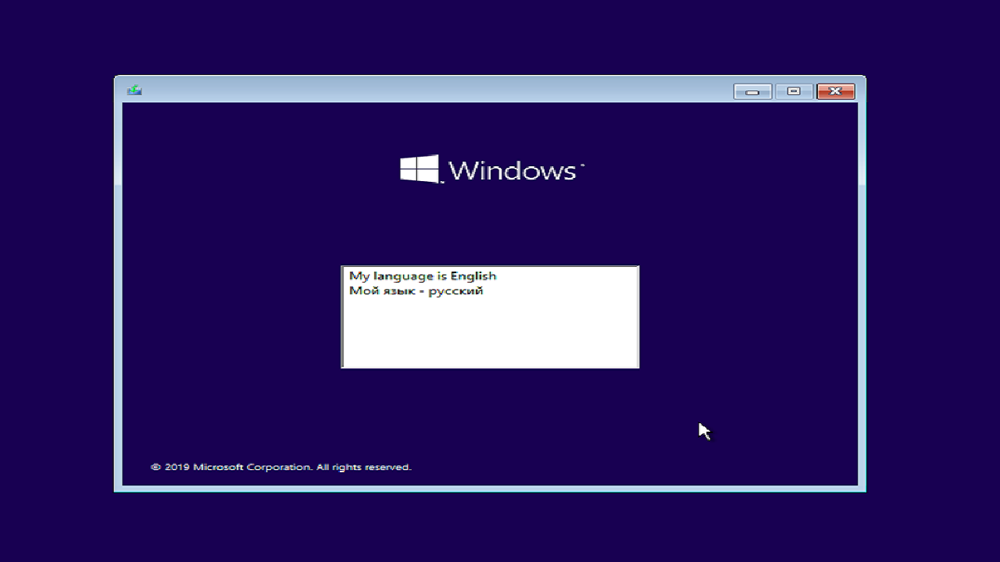
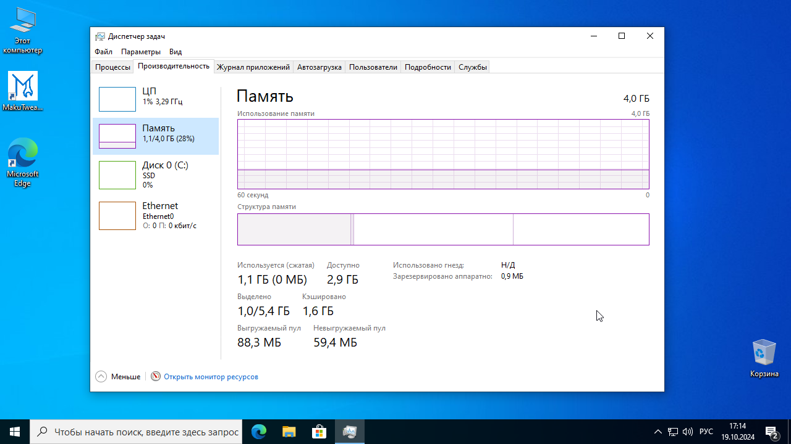
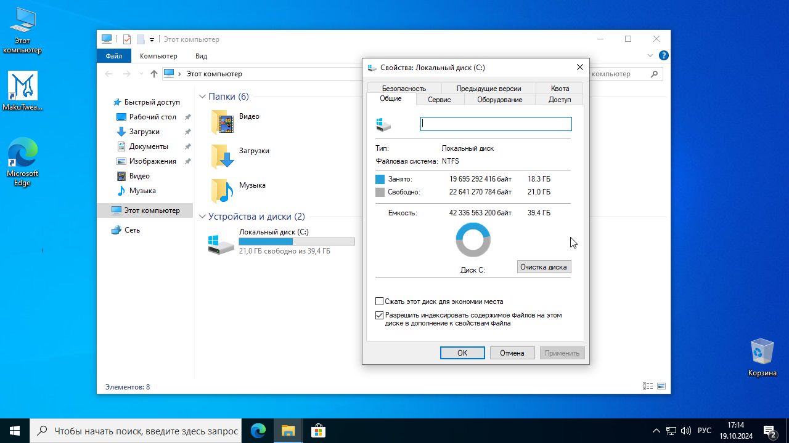
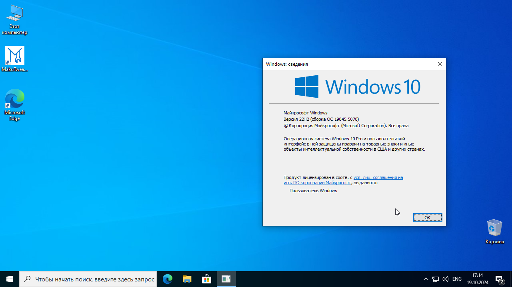
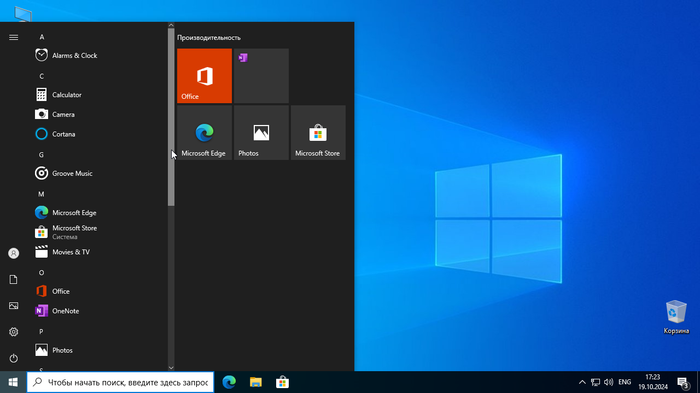
Удалённые приложения:
Удалён Windows Defender,Clipchamp, AV1 кодек, VP9 кодек, Microsoft Новости, Диктофон, Get Help, Quick Assist,
Microsoft Solitaire Collection, Sticky Notes, MP2 Кодек для DVD, Feedback Hub,
Outlook for Windows, RAW Image Extension, Microsoft Todos, DevHome,
Windows Mail, OneDrive, Remote Assistance, Wordpad, Windows To Go, Your Phone,
Windows Mixed Reality, Skype, Eye Control, Map Control, Microsoft Family.
Применённые настройки:
Основное:
Удалён рекламный диалог "Давайте завершим настройку этого устройства"Отключён Content Delivery Manager, который отвечает за предустановку рекламы
Запрещена установка стандартных мусорных UWP приложений после обновления системы
Из панели задач убраны рекламные иконки
Отключён SmartScreen и Включён DirectPlay.
Интегрированны NET Framework 2.0, 3.0, 3.5.
Телеметрия:
Запрещена диагностика установленных приложенийЗапрещена телеметрия за активацией системы
Запрещена публикация активности пользователя
Запрещён сбор информации о пользователе
Запрещён сбор информации об устройстве пользователя
Запрещён сбор информации о письменном вводе пользователя
Запрещён сбор информации о вводе текста пользователем с клавиатуры
Запрещён автоматической вход в аккаунт OneDrive
Запрещён сбор информации о производительности системы
Запрещено эксперементирование над системой пользователя
Отключена отправка сведений о сбоях приложений при их зависании
Отключена отправка результатов поиска пользователя
Отключена активация управления голосом
Отключена тихая установка рекламных приложений
Прочие изменения:
Интегрированны все обновления по конец октября 2024 года.В сборке присутствует два языка: Английский и Русский.
В сборке используется самописное OOBE, в котором нету лишних регионов. А так же, в котором можно выбрать нужные твики.
В системе предустановлен MakuTweaker. Это моя самописная программа. Подробнее о ней можно Узнать здесь.
Вместо предустановленных программ, в целях экономии места был помещён ярлык с ссылкой на - "Скачать программы".
Удалённые приложения:
Удалён Windows Defender, Кодеки AV1, VP9, MP2, RAW.Были удалены все UWP приложения, кроме Фотографий, Калькулятора, Будильников и Блокнота.
Применённые настройки:
Основное:
Удалена предустановка мусорных UWP приложений.Отключён SmartScreen и Включён DirectPlay.
Интегрированны NET Framework 2.0, 3.0, 3.5.
Телеметрия:
Была отключена, запрещена, и удалена какая либо телеметрия.Прочие изменения:
Интегрированны все обновления по конец октября 2024 года.В сборке присутствует два языка: Английский и Русский.
В сборке используется самописное OOBE с твиками.
Предустановлен MakuTweaker.
Было с нуля переделано OOBE. Была исправлена критическая проблема с выдачей прав администратора,
И была исправлена проблема с выдачей пароля. Больше ввода пароля в OOBE нет, его надо добавлять вручную.
Были Интегрированны обновления по конец октября 2024 года.
Теперь предустановлен MakuTweaker.
CRC32: B75A8935
MD5: C6C0266F35BA96118D5331A20CF4D156
SHA-1: A4DEA02EA2819E56944B2D943E40B8D1AF9D1A52
(для Rutracker на данный момент отдельная версия с другими хешами)
Скачать:
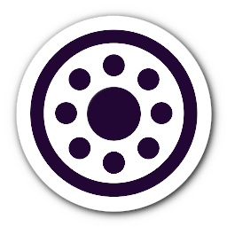 PixelDrain 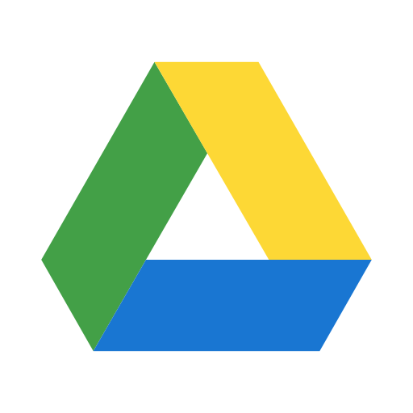 Google Drive 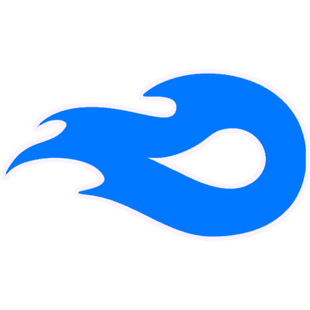 MediaFireMakuOS 10 Lite 1809 (Windows 10 1809, 17763.6414)
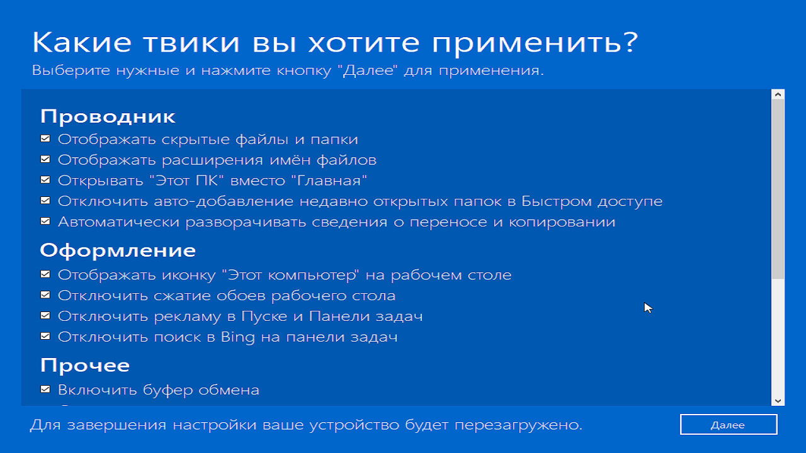
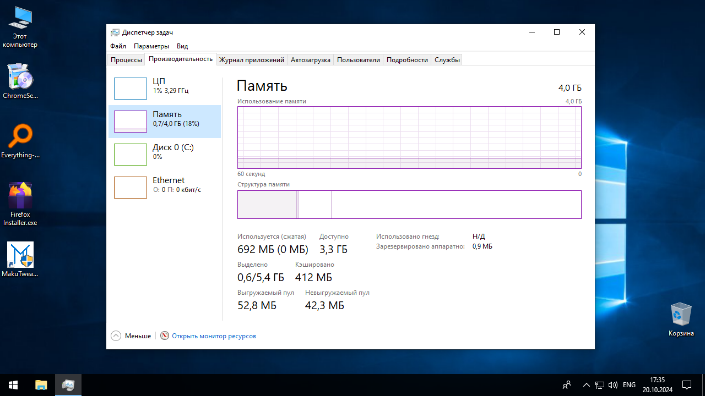
 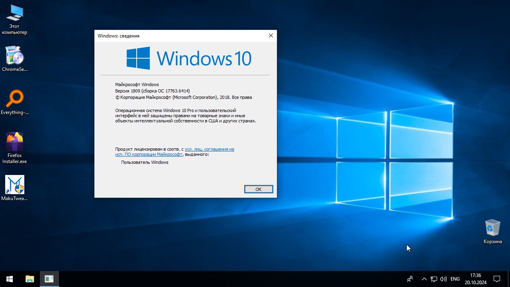
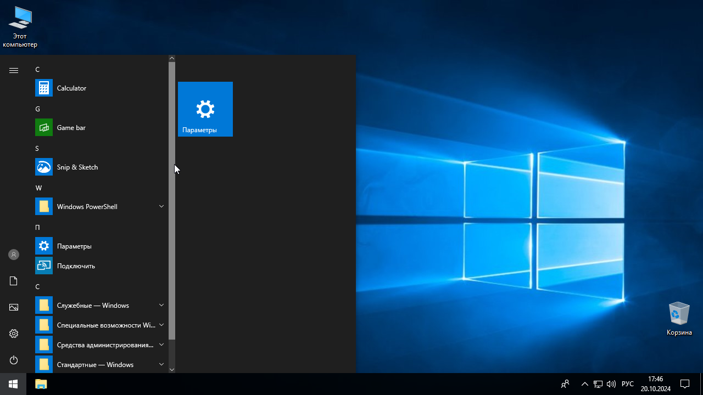
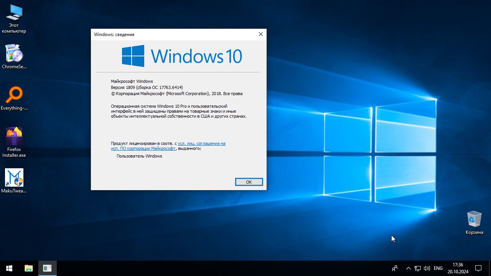
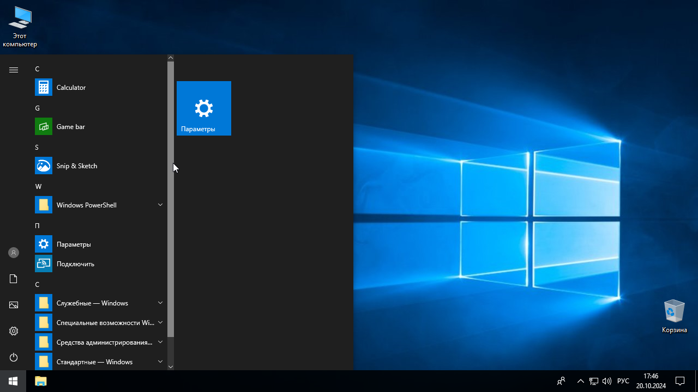
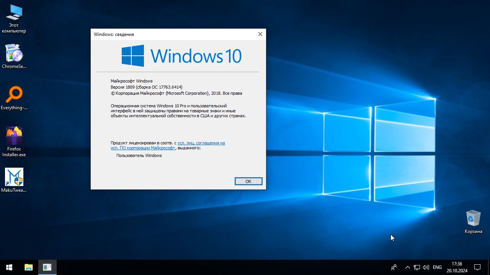
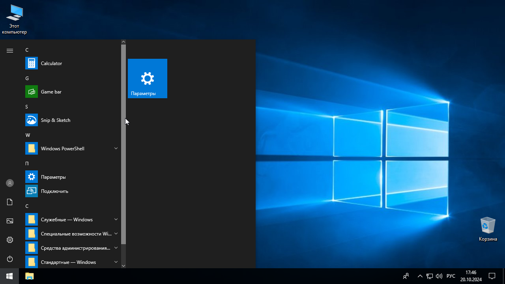
Удалённые приложения:
Удалён Microsoft Edge, Windows Defender, Xbox и Microsoft Store.Clipchamp, AV1 кодек, VP9 кодек, Microsoft Новости, Фотографии, Погода, Диктофон, Сообщения,
Календарь, Microsoft Solitaire Collection, Компоненты управления голосом, Sticky Notes, MP2 Кодек для DVD,
RAW Image Extension, Windows Hello, Windows Error Report, Feedback Hub, Get Help, 3D Viewer, Print 3D, OneDrive,
OneDrive, Remote Assistance, Your Phone, Skype, Windows Mixed Reality, Easy Transfer, Windows Sybsystem For Linux.
Применённые настройки:
Основное:
Удалён центр обновления системыВключён старый просмотрщик фото
Отключён Content Delivery Manager, который отвечает за предустановку рекламы
Из панели задач убраны рекламные иконки
Отключён SmartScreen и Включён DirectPlay.
Интегрированны NET Framework 2.0, 3.0, 3.5.
Телеметрия:
Запрещена диагностика установленных приложенийЗапрещена телеметрия за активацией системы
Запрещена публикация активности пользователя
Запрещён сбор информации о пользователе
Запрещён сбор информации об устройстве пользователя
Запрещён сбор информации о производительности системы
Запрещено эксперементирование над системой пользователя
Отключена отправка сведений о сбоях приложений при их зависании
Отключена отправка результатов поиска пользователя
Отключена активация управления голосом
Отключена тихая установка рекламных приложений
Прочие изменения:
Интегрированны все возможные обновления для Windows 10 1809.Отключены компоненты печати и PowerShell.
В сборке присутствует два языка: Английский и Русский.
В сборке используется самописное OOBE, в котором нету лишних регионов. А так же, в котором можно выбрать нужные твики.
В системе предустановлен MakuTweaker. Это моя самописная программа. Подробнее о ней можно Узнать здесь.
Удалённые приложения:
Удалён Центр обновлений, Microsoft Edge, Windows Defender, Xbox и Microsoft Store.Были удалены абсолютно все UWP приложения, кроме калькулятора.
Применённые настройки:
Основное:
Включён старый просмотрщик фото.Отключён SmartScreen и Включён DirectPlay.
Интегрированны NET Framework 2.0, 3.0, 3.5.
Телеметрия:
Была отключена, запрещена, и удалена какая либо телеметрия.Прочие изменения:
Интегрированны все возможные обновления для Windows 10 1809.В сборке присутствует два языка: Английский и Русский.
В сборке используется самописное OOBE с твиками.
Предустановлен MakuTweaker.
Была исправлена проблемка со спамом уведомлений центра обновлений.
Если вы уже установили сборку, достаточно прописать две команды в CMD (от имени администратора):
schtasks /Change /TN "Microsoft\Windows\LanguageComponentsInstaller\Installation" /Disable
schtasks /Change /TN "Microsoft\Windows\LanguageComponentsInstaller\ReconcileLanguageResources" /Disable
CRC32: B872F72E
MD5: AAB516809FB8AD09555D224031091FC4
SHA-1: 8C3CCF6297FB17B8B6A2DE01A97C212F338997D9
Скачать:
Временно недоступно.:
Windows 8.1 V7 by Adderly (Update 3)
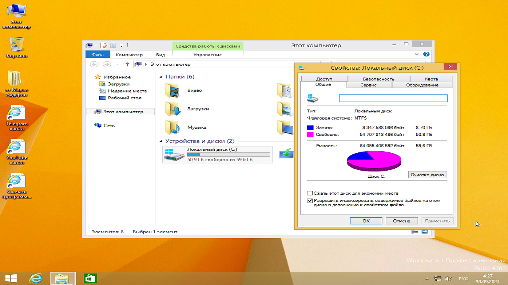
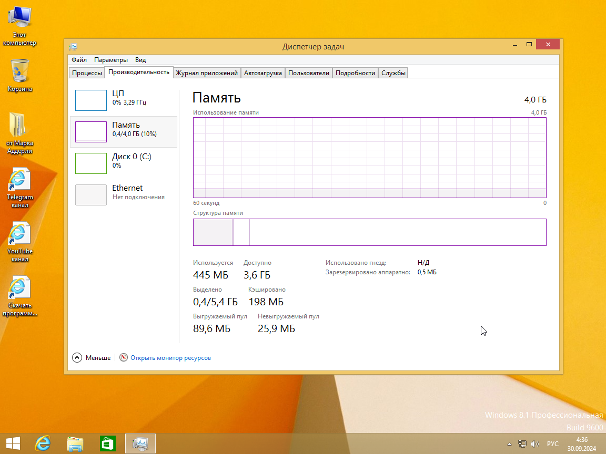
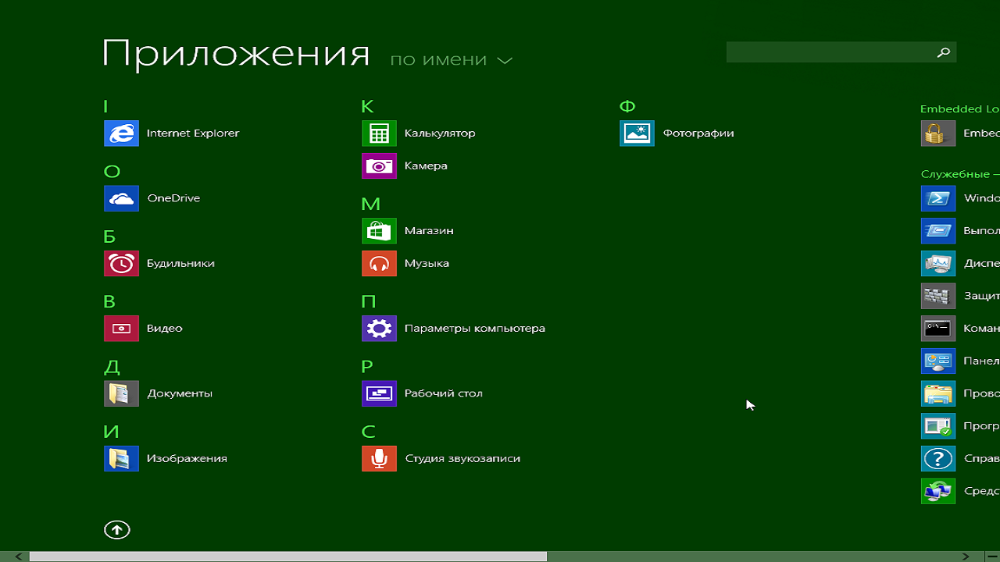
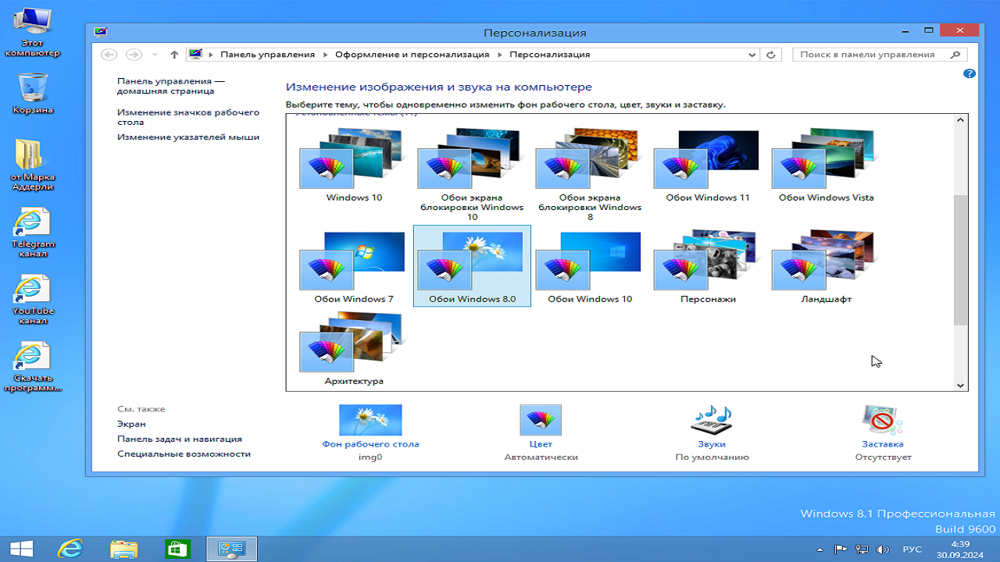
Удалённые приложения:
Финансы, Еда, Здоровье, Карты, Новости, Спорт, Путешествия, Погода,Помощь и советы, Почта, Календарь, Сканер, PDF Reader, Skype, OneNote, Xbox
Применённые настройки:
Удалён Windows DefenderОтключена задержка контекстного меню
Отключена авто-перезагрузка при синем экране смерти
Отключено залипание горячих клавиш
Отключено сжатие обоев рабочего стола
Отключён SmartScreen
Включено отображение расширений файлов
Включено отображение скрытых файлов
Добавлена иконка "Мой Компьютер" на рабочем столе
В проводнике будет открываться "Этот ПК" вместо "Быстрый доступ"
При переносе и копировании файлов, диалог автоматически развёрнут
Таймер проверки дисков увеличен с 8 секунд до 1 минуты
Прочие изменения:
Было добавлено 11 красивых и нескучных тем с обоями из Windows Vista, Windows 7, Windows 8 и Windows 10.Отключены компоненты печати и PowerShell.
Интегрированны DirectPlay и NET Framework 2.0, 3.0, 3.5.
На рабочем столе есть папка "от Марка Аддерли", в которой находятся браузеры, реги, и авторские программы.
Специально в этой сборке присутствует 3DP Net. Это программа для установки Wi-Fi драйверов на старых ПК.
Вместо предустановленных программ, в целях экономии места был помещён ярлык с ссылкой на - "Скачать программы".